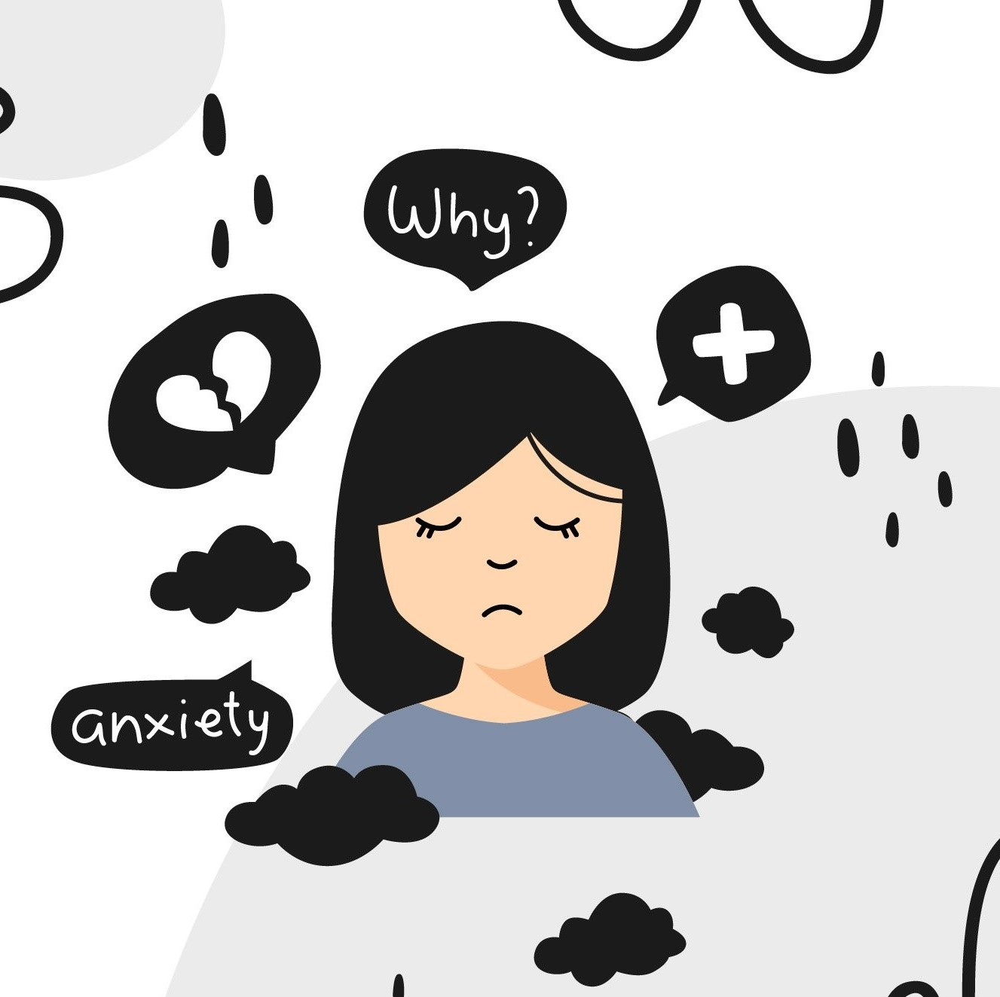
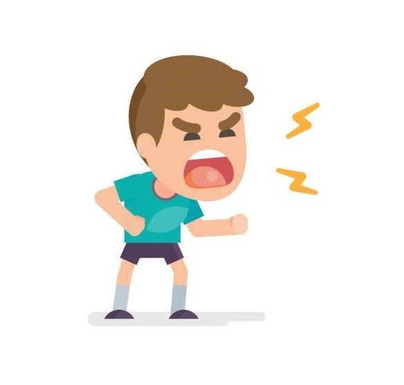
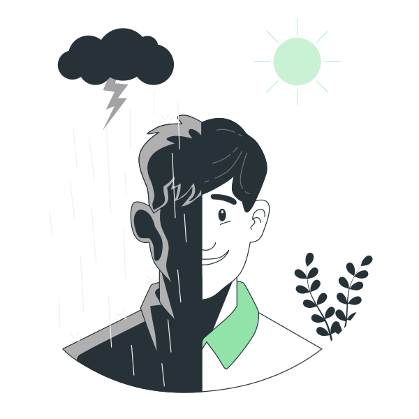
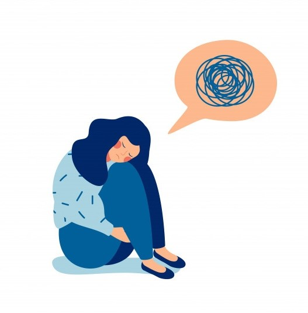
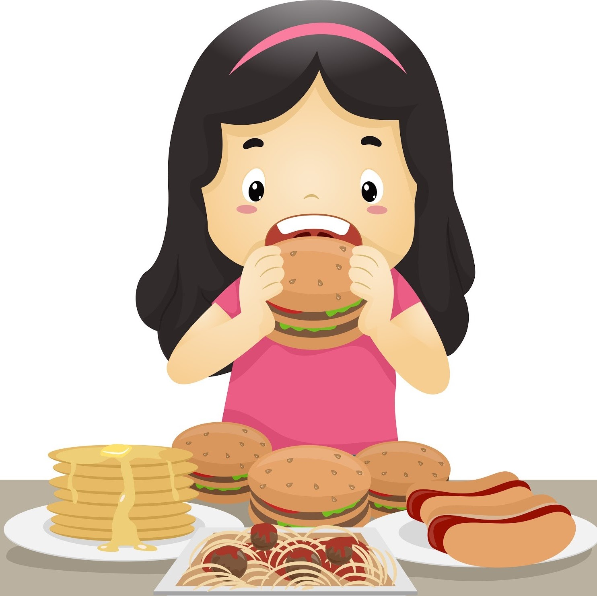
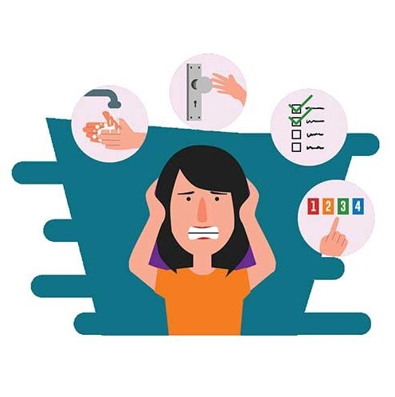
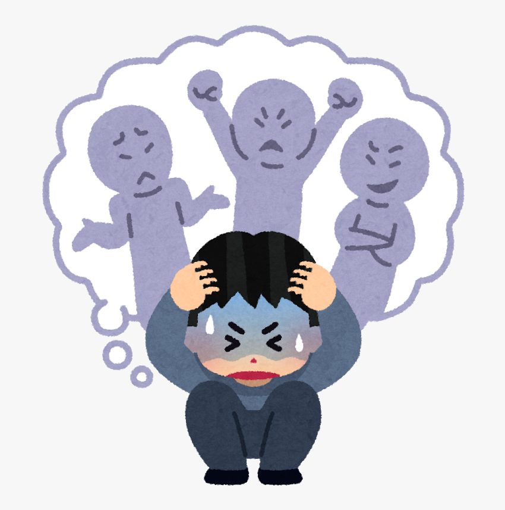
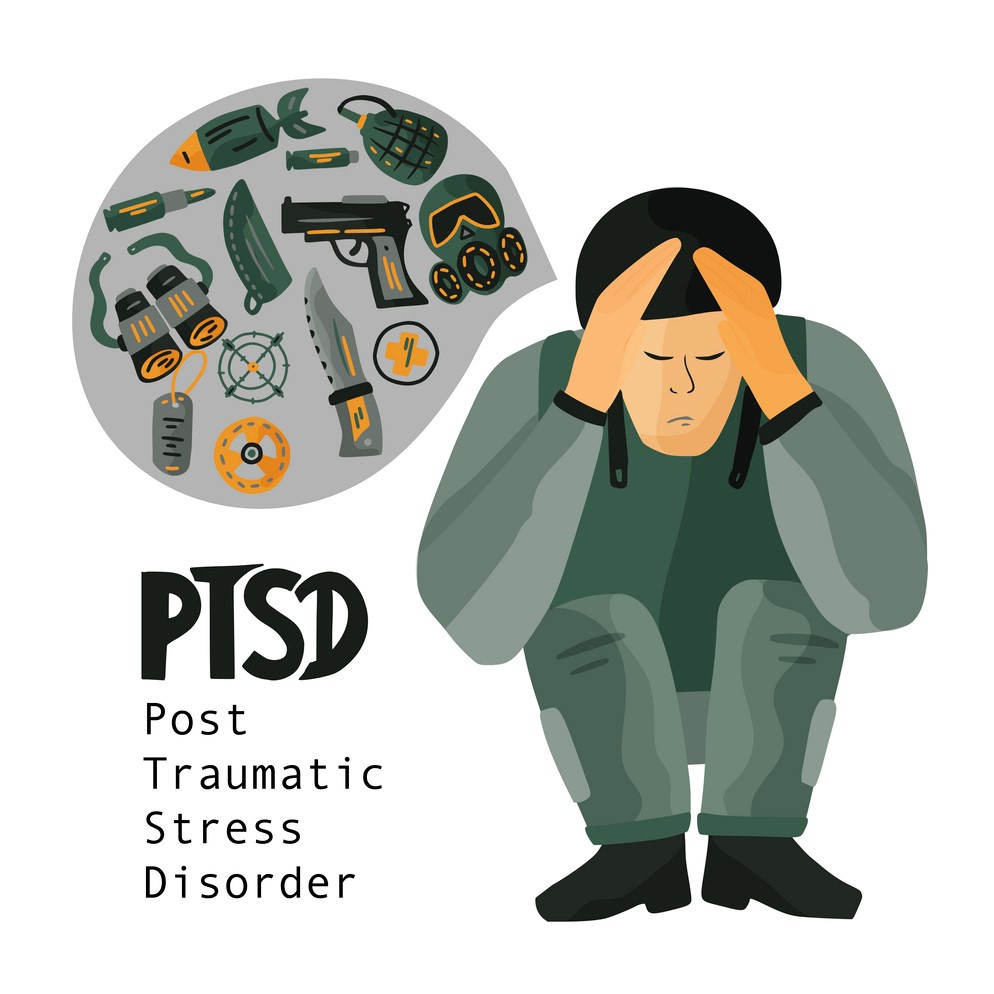
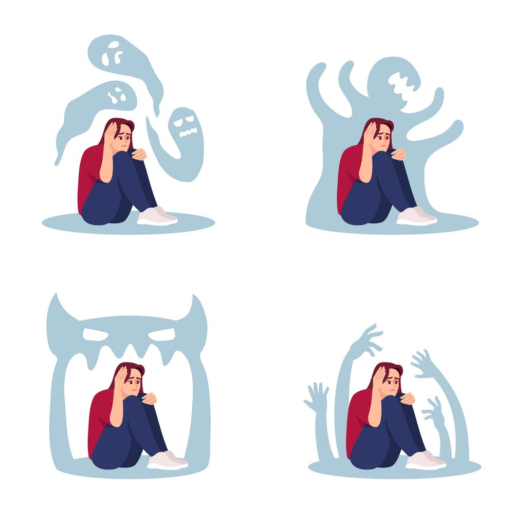
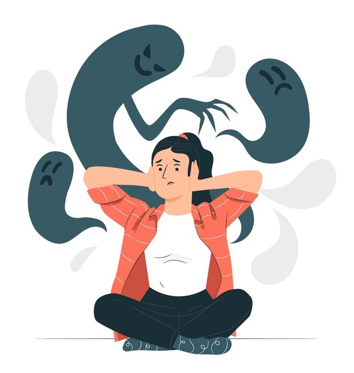

Different Types of Mental Health Illnesses

Anxiety Disorders
Anxiety disorders is a group of mental health disorders that includes generalised anxiety
disorders, social phobias, specific phobias (for example, agoraphobia and
claustrophobia), panic disorders, obsessive compulsive disorder (OCD) and
post-traumatic stress disorder. Untreated, anxiety disorders can lead to significant impairment on people’s daily lives.

Behavioural and emotional disorders in children
Common behaviour disorders in children include oppositional defiant disorder (ODD), conduct disorder (CD) and attention deficit hyperactivity disorder (ADHD). Treatment for these mental health disorders can include therapy, education and medication.

Bipolar affective disorder
It is a type of mood disorder, previously referred to as ‘manic depression’. A person with bipolar disorder experiences episodes of mania (elation) and depression. The person may or may not experience psychotic symptoms. The exact cause is unknown, but a genetic predisposition has been clearly established. Environmental stressors can also trigger episodes of this mental illness.
Depression
Depression is a mood disorder characterised by lowering of mood, loss of interest and enjoyment, and reduced energy. It is not just feeling sad. There are different types and symptoms of depression. There are varying levels of severity and symptoms related to depression. Symptoms of depression can lead to increased risk of suicidal thoughts or behaviours.

Dissociation and dissociative disorders
Dissociation is a mental process where a person disconnects from their thoughts, feelings, memories or sense of identity. Dissociative disorders include dissociative amnesia, dissociative fugue, depersonalisation disorder and dissociative identity disorder.

Eating disorders
Eating disorders include anorexia, bulimia nervosa and other binge eating disorders. Eating disorders affect females and males and can have serious psychological and physical consequences.

Obsessive compulsive disorder
Obsessive compulsive disorder (OCD) is an anxiety disorder. Obsessions are recurrent thoughts, images or impulses that are intrusive and unwanted. Compulsions are time-consuming and distressing repetitive rituals. Treatments include cognitive behaviour therapy (CBT), and medications.

Paranoia
Paranoia is the irrational and persistent feeling that people are ‘out to get you’. Paranoia may be a symptom of conditions including paranoid personality disorder, delusional (paranoid) disorder and schizophrenia. Treatment for paranoia includes medications and psychological support.

Post-traumatic stress disorder
Post-traumatic stress disorder (PTSD) is a mental health condition that can develop as a response to people who have experienced any traumatic event. This can be a car or other serious accident, physical or sexual assault, war-related events or torture, or natural disasters such as bushfires or floods.

Psychosis
People affected by psychosis can experience delusions, hallucinations and confused thinking. Psychosis can occur in a number of mental illnesses, including drug-induced psychosis, schizophrenia and mood disorders. Medication and psychological support can relieve, or even eliminate, psychotic symptoms.

Schizophrenia
It is a complex psychotic disorder characterised by disruptions to thinking and emotions, and a distorted perception of reality. Symptoms of schizophrenia vary widely but may include hallucinations, delusions, thought disorder, social withdrawal, lack of motivation and impaired thinking and memory. People with schizophrenia have a high risk of suicide. Schizophrenia is not a split personality.